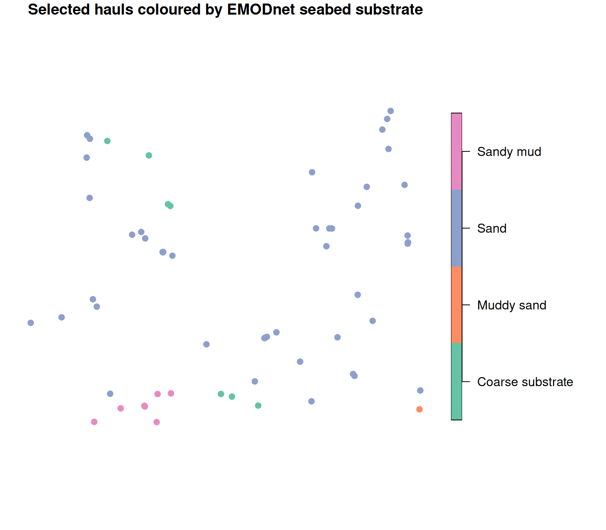

Matching EMODnet seabed habitats to hauls
Source:vignettes/articles/match-emodnet-habitats.Rmd
match-emodnet-habitats.RmdThis article shows how to attach broad-scale seabed habitat
information from EMODnet Seabed
Habitats (the EUSeaMap product) to the HH (haul) table
of a datras_raw object. The habitat map is a polygon
(vector) layer, so the haul positions in HH are turned into
points and matched into the habitat polygons with a spatial join.
EUSeaMap is a large, continental data set. Downloading the polygons for a whole survey at once is slow, so we work with a small set of hauls in one area and download only the habitat polygons that cover them. The same code scales to a full survey if you are prepared for a larger download (see the note at the end).
We use the example data set dab and the
sf package.
## Load the packages
library(DATRASextra)
library(sf)
## EMODnet habitat polygons are not always valid under sf's spherical (S2)
## geometry engine, which makes spatial joins fail. Use planar geometry, which
## is appropriate for a regional layer like this.
sf_use_s2(FALSE)
## Load the example data
data(dab)Haul positions as points
To keep the habitat download small, we first restrict the object to
the hauls from one small area (a box in the central North Sea) with
subset(). Working on this subset throughout means the
habitat we attach later lines up with every haul in the object, with no
unmatched (NA) hauls from areas we did not download.
## Restrict to a small area (central North Sea)
box <- subset(dab, lon > 2 & lon < 4 & lat > 54 & lat < 55)
nrow(box[["HH"]])
#> [1] 60The HH table stores haul positions in the
lon / lat columns (longitude/latitude, WGS84).
We build an sf point layer from them, keeping
haul.id so the habitat can be matched back to
HH afterwards.
## Haul points (EPSG:4326 = WGS84 lon/lat)
hauls <- st_as_sf(
box[["HH"]][, c("haul.id", "lon", "lat")],
coords = c("lon", "lat"),
crs = 4326
)
hauls
#> Simple feature collection with 60 features and 1 field
#> Geometry type: POINT
#> Dimension: XY
#> Bounding box: xmin: 2.029 ymin: 54.063 xmax: 3.8461 ymax: 54.9065
#> Geodetic CRS: WGS 84
#> First 10 features:
#> haul.id geometry
#> 304 NS-IBTS:2020:1:NL:64T2:GOV:37F345:45 POINT (3.8426 54.0975)
#> 305 NS-IBTS:2020:1:NL:64T2:GOV:37F344:44 POINT (3.4598 54.2928)
#> 306 NS-IBTS:2020:1:NL:64T2:GOV:38F343:43 POINT (3.4081 54.5398)
#> 311 NS-IBTS:2020:1:NL:64T2:GOV:37F238:38 POINT (2.3995 54.1398)
#> 312 NS-IBTS:2020:1:NL:64T2:GOV:37F237:37 POINT (2.173 54.347)
#> 313 NS-IBTS:2020:1:NL:64T2:GOV:38F236:36 POINT (2.3038 54.6708)
#> 314 NS-IBTS:2020:1:NL:64T2:GOV:38F235:35 POINT (2.3051 54.8311)
#> 343 NS-IBTS:2020:1:NL:64T2:GOV:38F306:6 POINT (3.7726 54.7061)
#> 358 NS-IBTS:2020:3:DK:26D4:GOV:175:55 POINT (3.1305 54.2941)
#> 359 NS-IBTS:2020:3:DK:26D4:GOV:173:54 POINT (2.6208 54.139)Download the EUSeaMap layer
EUSeaMap is served through the EMODnet Seabed Habitats WFS. Requesting the whole European map would be very large, so we restrict the download to the bounding box of the hauls.
First, the haul extent (in lon/lat):
## Bounding box of the hauls
bb <- st_bbox(hauls)
bb
#> xmin ymin xmax ymax
#> 2.0290 54.0630 3.8461 54.9065The EMODnet Seabed Habitats WFS endpoint is
https://ows.emodnet-seabedhabitats.eu/geoserver/emodnet_open/ows.
You can list the available layers and their attributes from the service
capabilities:
## Discover available layers (run once, interactively)
#wfs <- "https://ows.emodnet-seabedhabitats.eu/geoserver/emodnet_open/ows"
#st_layers(paste0("WFS:", wfs))Pick the EUSeaMap layer you need. The European broad-scale map
classified with EUNIS 2019 is
emodnet_open:eusm2025_eunis2019_full. Download only the
haul bounding box by passing a BBOX filter in the WFS
GetFeature request. The request below asks for GeoJSON
within the haul extent, and st_make_valid() repairs the
polygons so they can be used in a spatial join:
## WFS GetFeature request, restricted to the haul bounding box
wfs <- "https://ows.emodnet-seabedhabitats.eu/geoserver/emodnet_open/ows"
layer <- "emodnet_open:eusm2025_eunis2019_full"
url <- paste0(
wfs,
"?service=WFS&version=2.0.0&request=GetFeature",
"&typeNames=", layer,
"&srsName=EPSG:4326",
"&bbox=", paste(bb["ymin"], bb["xmin"], bb["ymax"], bb["xmax"], "urn:ogc:def:crs:EPSG::4326", sep = ","),
"&outputFormat=application/json"
)
habitat <- st_read(url, quiet = TRUE)
habitat <- st_make_valid(habitat)
## Inspect the attributes and choose the habitat column you want to keep
names(habitat)
#> [1] "id" "objectid" "oxygen" "salinity" "energy"
#> [6] "biozone" "substrate" "eunis2019c" "eunis2019d" "all2019d"
#> [11] "all2019dl2" "geometry"The key habitat attributes in this layer are eunis2019c
(EUNIS 2019 code), eunis2019d (EUNIS 2019 description), and
all2019d (full habitat description), alongside the
component descriptors substrate, energy,
biozone, salinity, and
oxygen.
Note that WFS axis order for EPSG:4326 is lat,lon, which is
why the bbox string above is ordered
ymin,xmin,ymax,xmax. If you prefer, you can instead
download the layer once from the EMODnet Seabed Habitats
download portal and read the local file with
st_read().
Spatial join to the hauls
With the habitat polygons in memory, transform the haul points to the
habitat layer’s CRS and join each point to the polygon it falls in. Keep
only the habitat attribute(s) you want (here the seabed
substrate; use eunis2019d for the full EUNIS
habitat description):
## Name of the habitat attribute to keep (from names(habitat) above)
habitat_col <- "substrate"
## Match points to polygons in the habitat layer's CRS
hauls_m <- st_transform(hauls, st_crs(habitat))
joined <- st_join(hauls_m, habitat[habitat_col], join = st_intersects)
## One habitat value per haul.id
head(st_drop_geometry(joined))
#> haul.id substrate
#> 304 NS-IBTS:2020:1:NL:64T2:GOV:37F345:45 Muddy sand
#> 305 NS-IBTS:2020:1:NL:64T2:GOV:37F344:44 Sand
#> 306 NS-IBTS:2020:1:NL:64T2:GOV:38F343:43 Sand
#> 311 NS-IBTS:2020:1:NL:64T2:GOV:37F238:38 Sand
#> 312 NS-IBTS:2020:1:NL:64T2:GOV:37F237:37 Sand
#> 313 NS-IBTS:2020:1:NL:64T2:GOV:38F236:36 SandBecause polygon boundaries can overlap or hauls can sit on a border, make sure there is exactly one row per haul before writing back (keep the first match):
## Collapse to one row per haul.id
joined <- st_drop_geometry(joined)
joined <- joined[!duplicated(joined$haul.id), ]Attach the habitat to HH
Finally, match the habitat back onto HH by
haul.id and store it as a new column. Matching by
haul.id (rather than row order) is robust to any reordering
during the join:
## Add the habitat column to HH
box[["HH"]]$habitat <- joined[[habitat_col]][
match(box[["HH"]]$haul.id, joined$haul.id)
]
## Check the result
table(box[["HH"]]$habitat, useNA = "ifany")
#>
#> Coarse substrate Muddy sand Sand Sandy mud
#> 7 1 44 8Because we worked on the box subset throughout, every
haul in it gets a habitat (apart from any haul that genuinely falls
outside the mapped area, which stays NA). The
HH table now carries a habitat class for each haul, which
can be used as a covariate in downstream analyses or as a grouping
variable when summarising catch by habitat.
Map the matched hauls
Finally, a quick base-R map of the selected hauls coloured by their
newly matched substrate. We turn the HH rows back into an
sf point layer and let the sf plot method
colour the points by the habitat column:
## Selected hauls as points, carrying the matched substrate
hauls_hab <- st_as_sf(
box[["HH"]][, c("haul.id", "lon", "lat", "habitat")],
coords = c("lon", "lat"),
crs = 4326
)
## Colour each haul by its matched substrate
plot(hauls_hab["habitat"], pch = 19,
main = "Selected hauls coloured by EMODnet seabed substrate")
Summary
Matching EMODnet seabed habitats to a datras_raw object
comes down to three steps: turn HH$lon /
HH$lat into an sf point layer, download the
EUSeaMap polygons for the haul bounding box from the EMODnet Seabed
Habitats WFS, and join the points into the polygons with
st_join(). The same pattern works for other EMODnet vector
layers by changing the WFS layer name.
For a whole survey the bounding box can be large and the single WFS download slow. In that case, split the hauls into smaller boxes (for example by ICES rectangle or a coarse lon/lat grid), download and join each box separately, and combine the results — or download the EUSeaMap layer once from the download portal and read it locally.